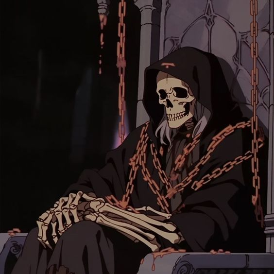

i do a lot of stuff, and instead of making a huge wall of text explaining allat
this website exists to show off what i do, both for fun and for school/work :D
I'm a lot of things, mainly a loser. but i have some cool things about me too!!
- I'm a developer - primarily for discord bots, wherein i write
shitty amazing code :)
- I also am huge into music. a musician of 12 years and with spotify perpetually in my ears
In here you will find all the things i love to share and babble about, including my code, music taste, and everything inbetween.
This website itself is also a passion project, I love the feel of the retro internet, and im doing my best to bring that emotion back.
Take a look around, and thanks for stopping by :)